5.1 รายชื่อหมู่เรียน (Section)#
เป้าหมายของขั้นตอนนี้ ดูภาพรวมหมู่เรียนทั้งหมดในรายวิชา และเข้าไปจัดการนักศึกษาในแต่ละหมู่
เมนู จัดการชั้นเรียน > กลุ่มเรียน ใช้จัดการหมู่เรียนและนักศึกษาในแต่ละหมู่ แท็บ รายชื่อนักศึกษา แสดงหมู่เรียนทั้งหมดพร้อมจำนวนนักศึกษาในแต่ละหมู่
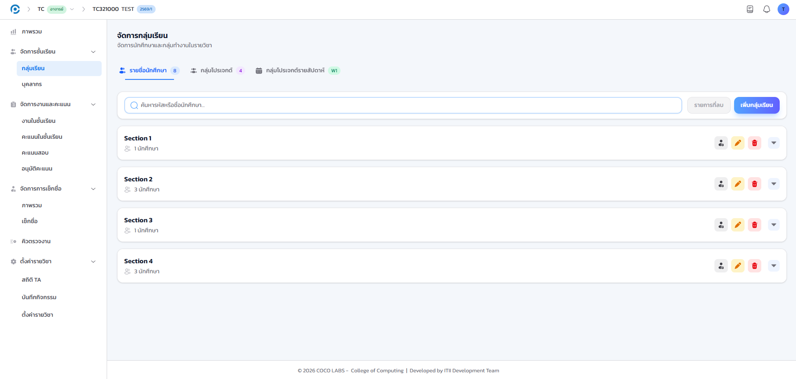
- ไอคอนท้ายแถวของแต่ละหมู่
- ใช้เพิ่มนักศึกษาเข้าหมู่ แก้ไข ลบ และขยายดูรายชื่อ
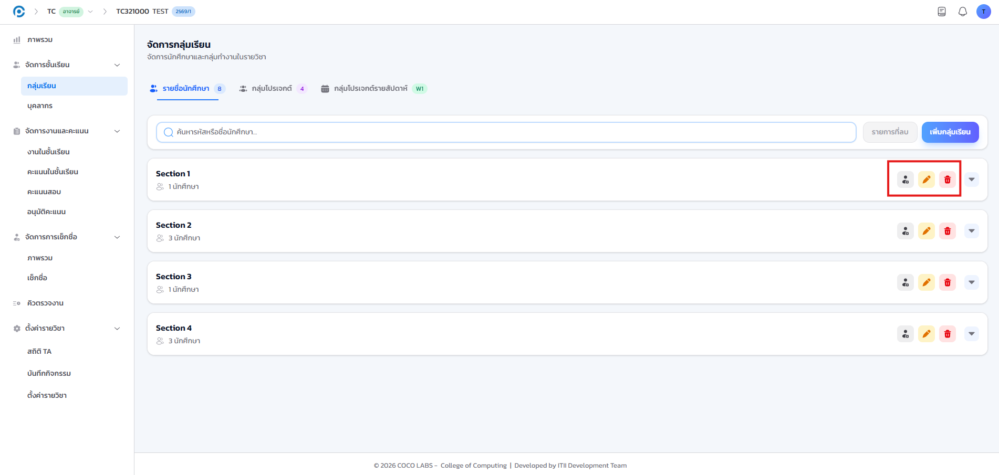
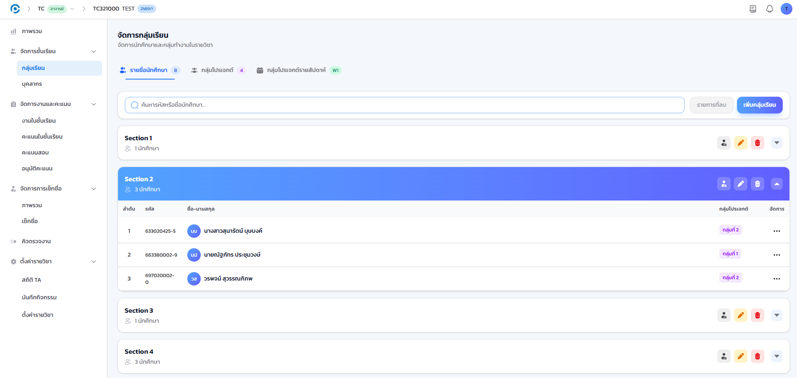
5.2 เพิ่มหมู่เรียนใหม่#
เป้าหมายของขั้นตอนนี้ สร้างหมู่เรียนใหม่เพื่อจัดกลุ่มนักศึกษาตามตารางเรียน
- คลิกปุ่ม เพิ่มกลุ่มเรียน ระบบจะเปิดหน้าต่างให้กรอกข้อมูล
- กรอก หมายเลขกลุ่มเรียน เช่น 1, 2, 801
- กรอก หมายเหตุ (หากมี) เช่น ภาคปกติ ภาคพิเศษ
- คลิกปุ่ม เพิ่มกลุ่มเรียน เพื่อบันทึก
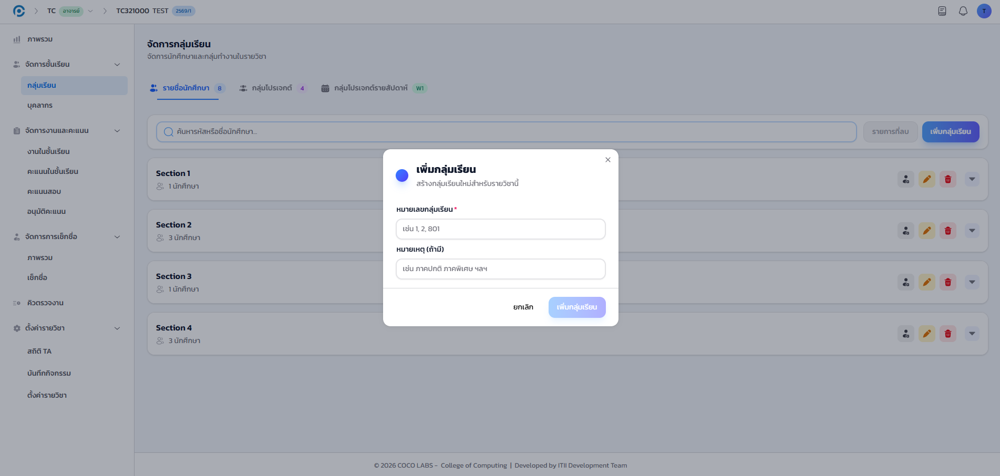
หมู่เรียนใหม่ปรากฏในรายการทันที พร้อมจำนวนนักศึกษาเริ่มต้นเป็น 0 พร้อมเพิ่มนักศึกษาเข้าหมู่ต่อได้
5.3 รายการที่ถูกลบและการกู้คืน#
เป้าหมายของขั้นตอนนี้ กู้คืนนักศึกษาที่ถูกลบออกจากหมู่เรียนโดยไม่ตั้งใจ ภายในช่วงเวลาที่ระบบกำหนด
- คลิกปุ่ม รายการที่ลบ เพื่อดูนักศึกษาที่ถูกลบออกจากหมู่เรียน
- คลิกปุ่มกู้คืนที่แถวของนักศึกษาที่ต้องการนำกลับเข้าหมู่
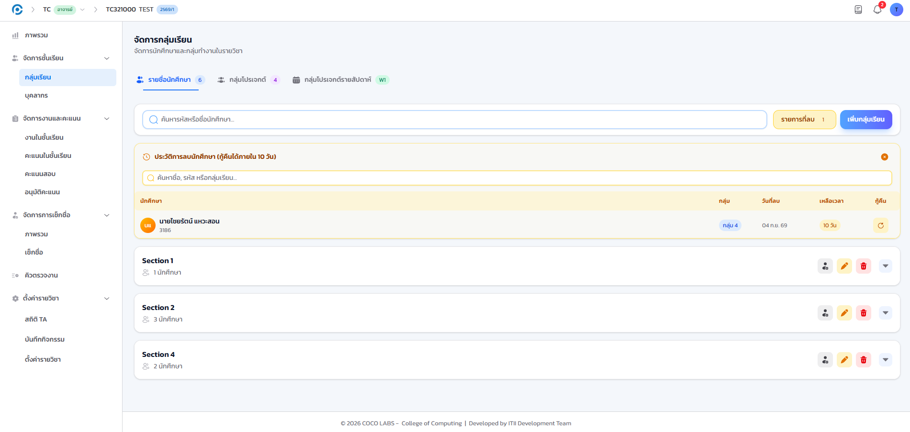
รายการที่ลบกู้คืนได้เฉพาะภายในช่วงเวลาที่ระบบกำหนดเท่านั้น หากพ้นช่วงเวลาดังกล่าวแล้วจะกู้คืนไม่ได้อีก กรุณาตรวจสอบหน้าต่างเวลาที่แสดงในหน้ารายการที่ลบก่อนดำเนินการ
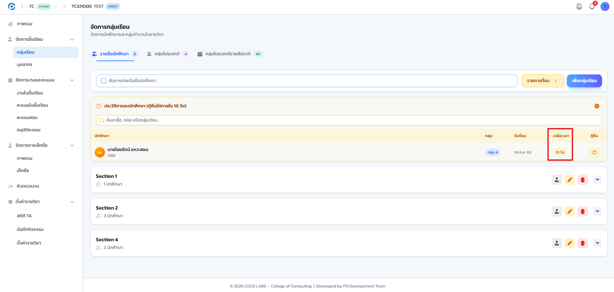
5.4 กลุ่มโปรเจกต์ (Teams)#
เป้าหมายของขั้นตอนนี้ จัดกลุ่มนักศึกษาสำหรับงานกลุ่มที่ใช้ตลอดทั้งเทอม
ในหน้าจัดการหมู่เรียน แท็บ กลุ่มโปรเจกต์ ใช้จัดกลุ่มนักศึกษาสำหรับงานกลุ่มที่เป็นกลุ่มถาวรตลอดทั้งเทอม ส่วนแท็บ กลุ่มโปรเจกต์รายสัปดาห์ ใช้กำหนดกลุ่มเฉพาะสัปดาห์
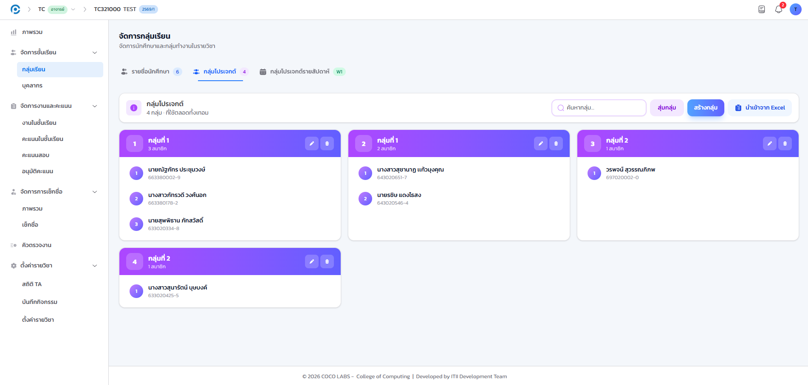
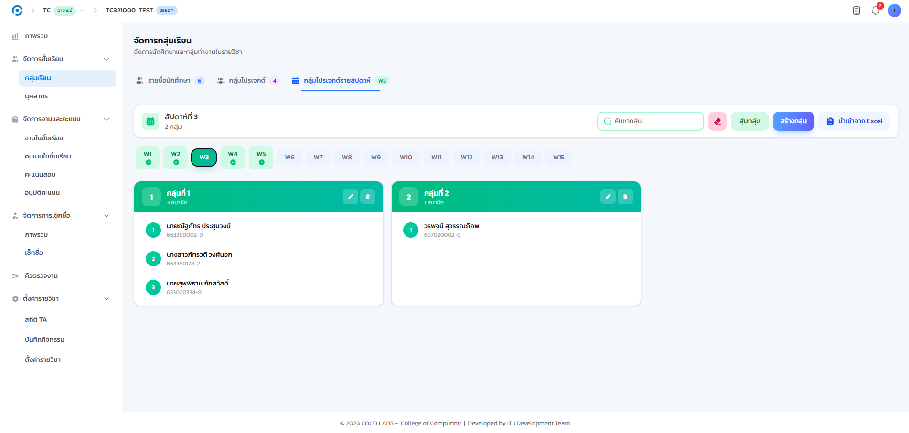
5.5 สร้างกลุ่มโปรเจกต์#
เป้าหมายของขั้นตอนนี้ สร้างกลุ่มนักศึกษาสำหรับงานกลุ่ม ด้วยตนเองหรือให้ระบบสุ่มให้
- คลิกปุ่ม สร้างกลุ่ม เพื่อสร้างกลุ่มและเพิ่มสมาชิกด้วยตนเอง
- หรือคลิกปุ่ม สุ่มกลุ่ม เพื่อให้ระบบจัดกลุ่มให้อัตโนมัติ
- หรือคลิกปุ่ม นำเข้าจาก Excel เพื่อนำเข้ารายชื่อสมาชิกกลุ่มจากไฟล์ที่เตรียมไว้
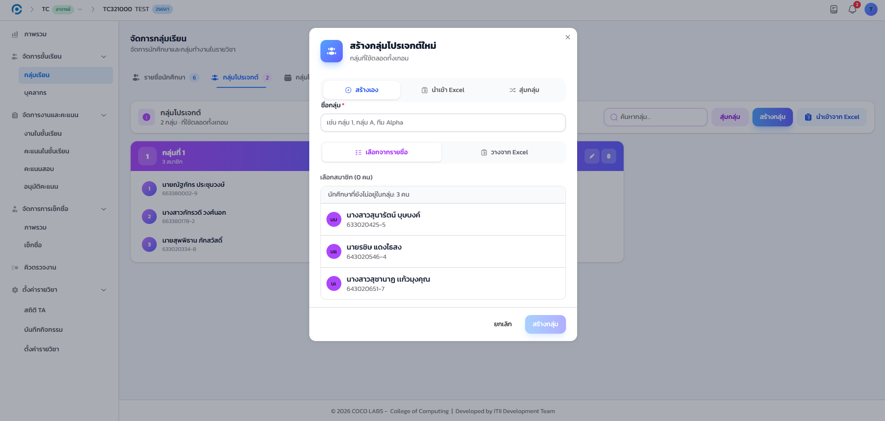
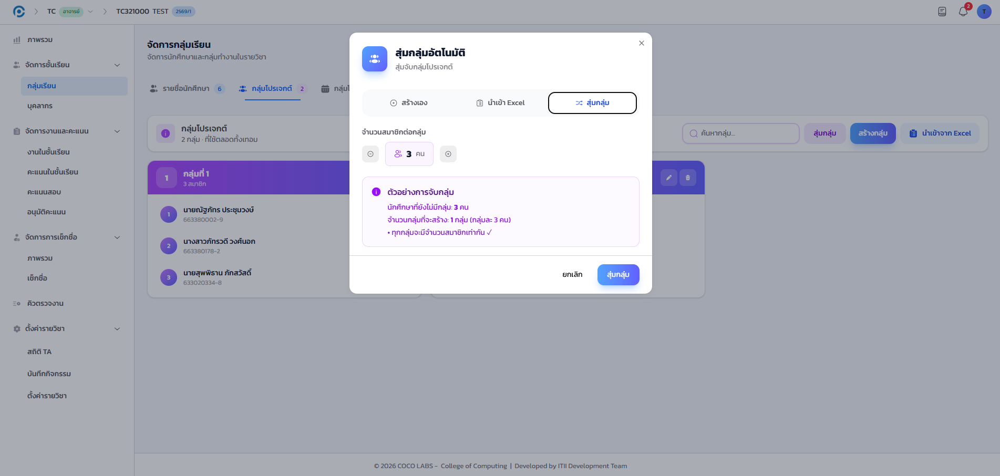
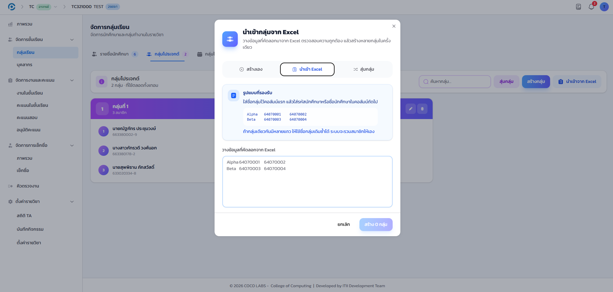
กลุ่มที่สร้างแล้วแสดงรายชื่อสมาชิกครบทุกกลุ่ม พร้อมปุ่มแก้ไขและลบกลุ่มที่แต่ละการ์ดกลุ่ม